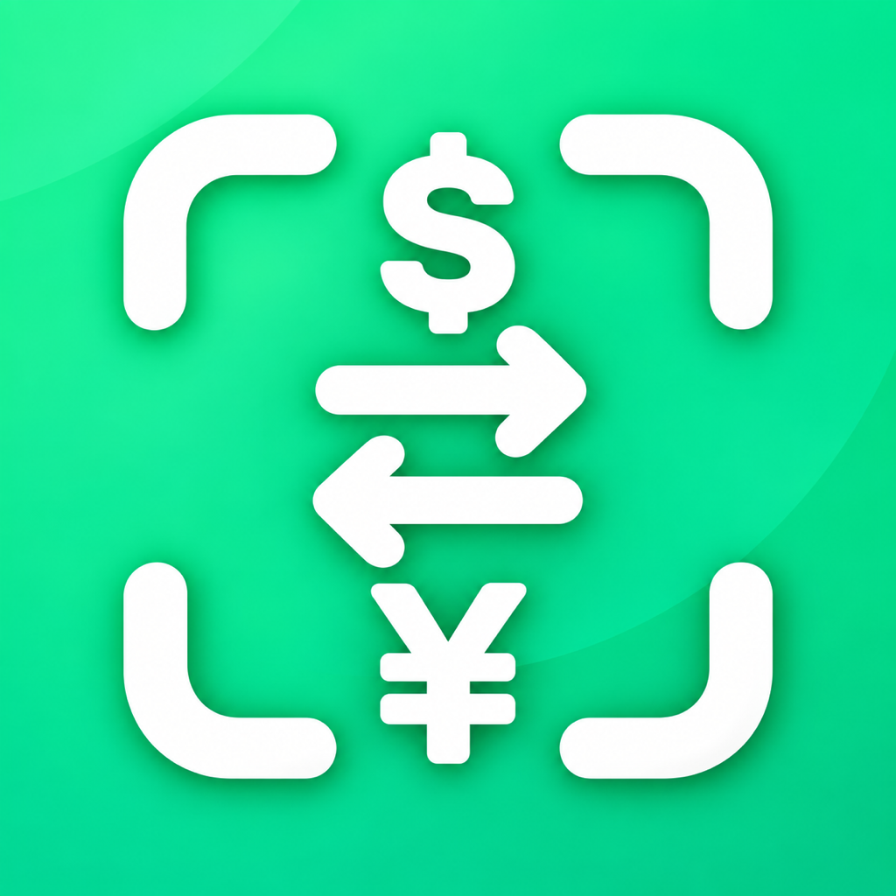

從看不懂，到準備好點餐
- 先選好設定翻譯語言與來源、目標幣別。
- 鏡頭對準查看菜名翻譯與換算後的參考價格。
- 保存分享拍下合成結果，稍後回看或傳給旅伴。

iPhone App · 已於 App Store 上線
看懂菜名，也看懂價格。
你還在手動輸入金額換算嗎？鏡頭對準菜單、藥妝店價牌或旅途中的看板，翻譯文字並查看熟悉幣別的參考價格。還能保存畫面，分享給同行朋友。
免費十次掃描 · 可選購永久解鎖 · 需要 iOS 18 或以上版本
新版正在準備送審。以下以範例菜單呈現新版介面；App Store 目前提供 1.0。
介面語言、翻譯語言與貨幣轉換分開設定。介面提供繁中、英、日、韓、法、義大利及德文。
點按對焦、調整縮放，查看鏡頭中的翻譯與換算。支援淺色及深色外觀。
使用 ExchangeRate-API 每日參考資料。設定頁顯示資料更新時間；離線時顯示可用的已儲存匯率，過舊資料另有提示。
免費提供 10 次掃描。永久解鎖的美國區基準價為 US$4.99，支援家庭共享；不需訂閱。各地實際售價以 Apple 購買畫面為準。
辨識與翻譯取決於畫面清晰度及 Apple 支援的語言，翻譯可能需要先下載語言模型。換算價格僅供參考，實際付款金額以店家與支付機構為準。